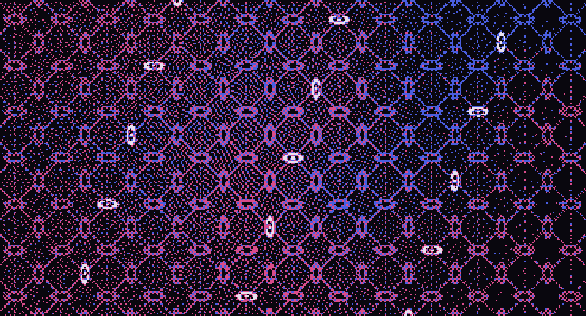

Page not found
This address names no page of the Neura website.
Go to the front page or the Reading Room, which lists every document. If a link on this site brought you here, please report it.

This address names no page of the Neura website.
Go to the front page or the Reading Room, which lists every document. If a link on this site brought you here, please report it.
